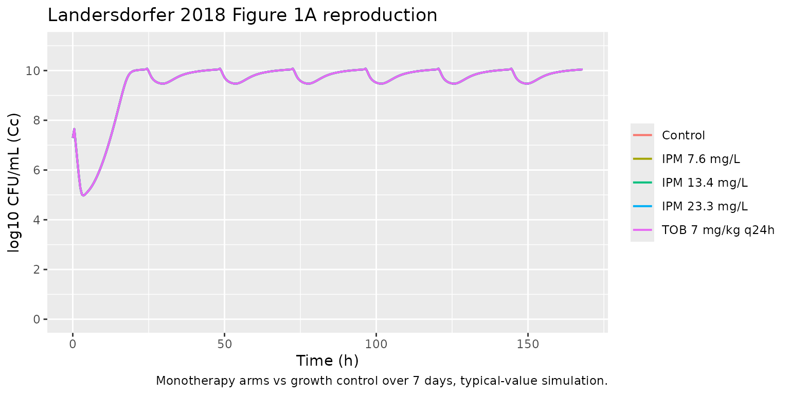
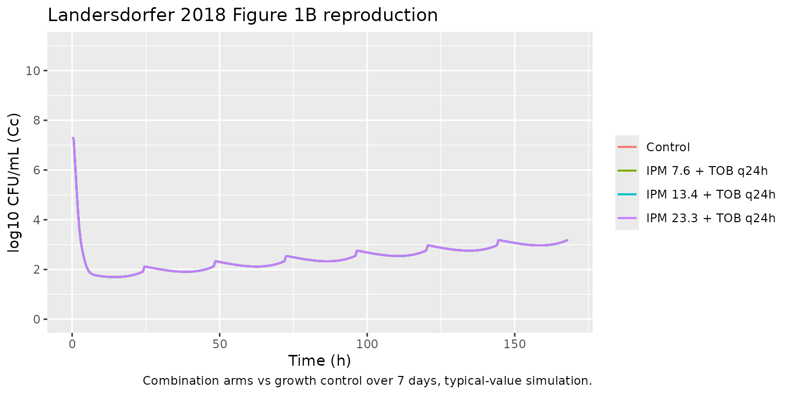
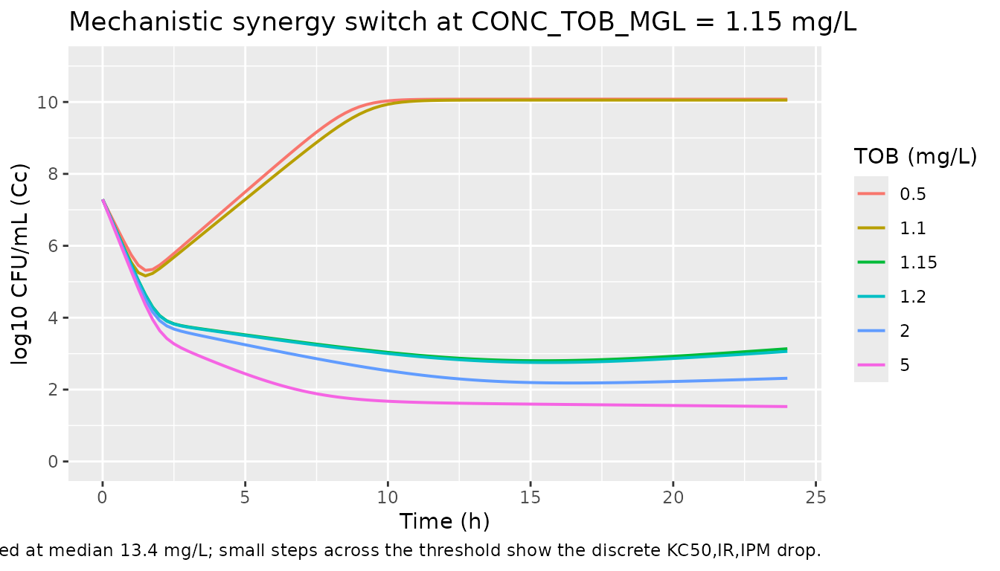

Imipenem + tobramycin HFIM time-kill (Landersdorfer 2018)
Source:vignettes/articles/Landersdorfer_2018_imipenem_tobramycin.Rmd
Landersdorfer_2018_imipenem_tobramycin.RmdModel and source
- Citation: Landersdorfer CB, Yadav R, Rogers KE, Kim TH, Shin BS, Boyce JD, Nation RL, Bulitta JB. (2018). Combating carbapenem-resistant Acinetobacter baumannii by an optimized imipenem-plus-tobramycin dosage regimen: prospective validation via hollow-fiber infection and mathematical modeling. Antimicrobial Agents and Chemotherapy 62(4):e02053-17. doi:10.1128/AAC.02053-17.
- Description: In vitro (carbapenem-resistant Acinetobacter baumannii FADDI-AB034). Mechanism-based pharmacodynamic model for an imipenem-plus-tobramycin combination in a 7-day hollow-fiber infection model (HFIM). Three pre-existing bacterial subpopulations differing in imipenem and tobramycin susceptibility (population 1 IPM-S/TOB-S, population 2 IPM-R/TOB-I, population 3 IPM-I/TOB-R) each follow a Bulitta two-state life-cycle growth model (S1 -> S2 -> 2*S1 with replication rate k21 fixed and per-subpopulation mean generation time 1/k12). Logistic carrying-capacity attenuation applies to the replicating step. Imipenem kills with a sigmoidal Hill function (Hill = 3 fixed) and tobramycin with an Emax function; mechanistic synergy is encoded as a discrete 70-fold reduction of the imipenem KC50 against population 3 when the tobramycin concentration meets or exceeds 1.15 mg/L (i.e. tobramycin permeabilizing the outer bacterial membrane toward imipenem). Imipenem and tobramycin concentrations are external time-varying inputs (covariates CONC_IPM_MGL and CONC_TOB_MGL); the model contains no human PK component.
- Article: https://doi.org/10.1128/AAC.02053-17
The article’s supplemental material (Fig. S1 – targeted vs observed tobramycin profile; Fig. S2 – model fit panels; Fig. S4 – three- subpopulation schematic; S-ADAPT control stream) was not available on disk for this extraction. The model structure encoded here is the canonical Bulitta two-state life-cycle growth model (LCGM) consistent with the parameters reported in the main-paper Table 1; see the Assumptions and deviations section for a precise statement of which structural choices the supplement would have disambiguated.
Population
The model was fit to viable-count data from a 7-day dynamic in vitro hollow-fiber infection model (HFIM) against a single clinical carbapenem-resistant Acinetobacter baumannii (CRAB) isolate, FADDI-AB034, with imipenem MIC 32 mg/L and tobramycin MIC 2 mg/L. Target inoculum was approximately 10^7.2 CFU/mL to mirror bacterial densities in severe clinical infections. The experimental design exposed the isolate to three imipenem regimens (constant unbound concentrations of 7.6, 13.4, and 23.3 mg/L, corresponding to the 5th, 50th, and 95th percentile steady-state unbound concentrations from a 4 g/day continuous infusion with 1 g loading dose in critically ill patients), tobramycin monotherapy (7 mg/kg q24h 0.5-h infusions; the two-compartment unbound profile – observed peak 12.3 mg/L at 1.2 h, trough 1.37 mg/L at 23 h – was reproduced by switching the hollow- fiber pump flow rate at 5 h each day), and each imipenem level combined with the same tobramycin regimen.
The complete population metadata is available programmatically via
readModelDb("Landersdorfer_2018_imipenem_tobramycin")$population.
There is no human or animal cohort: this is an in-vitro PD model. The paper reports population mean parameter point estimates with relative standard errors only and does not estimate any random-effect IIV / inter-replicate eta. The packaged model has zero etas and is intended for typical-value simulation.
Source trace
The model has three bacterial subpopulations indexed by their susceptibility profile against imipenem (IPM) and tobramycin (TOB):
| Subpop | Paper symbol | IPM susceptibility | TOB susceptibility | Initial fraction |
|---|---|---|---|---|
ss |
SS (pop 1) | susceptible | susceptible | 1 - 10^-5.59 - 10^-3.22 (~ 1) |
ri |
RI (pop 2) | resistant | intermediate | 10^-5.59 |
ir |
IR (pop 3) | intermediate | resistant | 10^-3.22 |
Each subpopulation has a two-state LCGM (Bulitta-style): a slow S1
-> S2 transition at rate k12_p (1 / “mean generation
time”) and a fast doubling S2 -> 2*S1 at rate
k21 = 50 /h shared across subpops. The slow rate is
attenuated by the carrying-capacity logistic factor
growth_attn = 1 - total / 10^logcfumax so that the no-drug
asymptote lands at logcfumax = 10.1 log10 CFU/mL. Per Table
1 footnote (c), the IR subpopulation shares the SS mean generation time
(no benefit of estimating it separately).
Imipenem killing is a sigmoidal Hill function with
Kmax,IPM = 1.74 /h shared across subpops and a per-subpop
KC50,p,IPM; the Hill coefficient is fixed at 3 (Table 1
footnote d). Tobramycin killing is an Emax function (Hill implicit 1)
with per-subpop Kmax,p,TOB and KC50,p,TOB;
Table 1 footnote (e) constrains
Kmax,TOB,IR = Kmax,TOB,SS.
The paper’s “mechanistic synergy” is the load-bearing combination
mechanism: when tobramycin in the bath meets or exceeds the threshold
TOB_cut = 1.15 mg/L, the outer bacterial membrane of the
IPM-intermediate / TOB-resistant subpopulation (pop 3, “ir”) is
permeabilised, dropping KC50,IR,IPM 70-fold from 112 to
1.60 mg/L (Landersdorfer 2018 page 3 of the article, paragraph
“Inclusion of mechanistic synergy”). The model encodes this as a
discrete switch at tob_cut in model().
| Parameter (paper symbol) | File name | Value | Units | Source |
|---|---|---|---|---|
| log CFU0 | logcfu0 |
7.29 | log10 CFU/mL | Table 1 |
| log CFUmax | logcfumax |
10.1 | log10 CFU/mL | Table 1 |
| k21 (FIXED) | lk21 |
50 | 1/h | Table 1 |
| 1/k12,SS | mgt_ss |
33.7 | min | Table 1 (shared by pop 3 per fn c) |
| 1/k12,RI | mgt_ri |
63.2 | min | Table 1 |
| log MUT,IPM | log10_mut_ipm |
-5.59 | log10 fraction | Table 1 |
| log MUT,TOB | log10_mut_tob |
-3.22 | log10 fraction | Table 1 |
| Kmax,IPM | lkmax_ipm |
1.74 | 1/h | Table 1 |
| HILL,IPM (FIXED) | lhill_ipm |
3.0 | (unitless) | Table 1 (fn d) |
| KC50,SS,IPM | lkc50_ss_ipm |
0.175 | mg/L | Table 1 |
| KC50,RI,IPM | lkc50_ri_ipm |
645 | mg/L | Table 1 |
| KC50,IR,IPM (mono) | lkc50_ir_ipm_mono |
112 | mg/L | Table 1 (CONC_TOB_MGL < tob_cut) |
| KC50,IR,IPM (combo) | lkc50_ir_ipm_combo |
1.60 | mg/L | Table 1 (CONC_TOB_MGL >= tob_cut) |
| TOB cut | tob_cut |
1.15 | mg/L | Table 1 |
| Kmax,TOB,SS | lkmax_tob_ss |
4.69 | 1/h | Table 1 (also pop 3 per fn e) |
| Kmax,TOB,RI | lkmax_tob_ri |
0.992 | 1/h | Table 1 |
| KC50,SS,TOB | lkc50_ss_tob |
0.156 | mg/L | Table 1 |
| KC50,RI,TOB | lkc50_ri_tob |
0.316 | mg/L | Table 1 |
| KC50,IR,TOB | lkc50_ir_tob |
27.7 | mg/L | Table 1 |
| SD CFU | addSd |
0.304 | log10 CFU/mL | Table 1 |
Compartment and observation conventions:
| Compartment | Units | Meaning |
|---|---|---|
s1_ss |
CFU/mL | IPM-S/TOB-S subpop, S1 state (pre-replicating) |
s2_ss |
CFU/mL | IPM-S/TOB-S subpop, S2 state (replicating) |
s1_ri |
CFU/mL | IPM-R/TOB-I subpop, S1 state |
s2_ri |
CFU/mL | IPM-R/TOB-I subpop, S2 state |
s1_ir |
CFU/mL | IPM-I/TOB-R subpop, S1 state |
s2_ir |
CFU/mL | IPM-I/TOB-R subpop, S2 state |
Cc |
log10 CFU/mL | observation: log10 of total bacterial concentration (+ 1 CFU floor) |
Helper: build an HFIM scenario
The HFIM uses external drug input – imipenem at a constant unbound
concentration in the bath, tobramycin as a q24h pulse with a piecewise
elimination pattern. We pass both as time-varying covariates
CONC_IPM_MGL and CONC_TOB_MGL on the event
table; the rxode2 simulator interpolates between rows.
The helper below builds an et() table that:
- enumerates observation times across a multi-day window,
- assigns a constant
CONC_IPM_MGL(the paper’s three percentile imipenem regimens are 7.6, 13.4, and 23.3 mg/L; for monotherapy controls setCONC_IPM_MGL = 0), - assigns a
CONC_TOB_MGLprofile that is either zero (for IPM-monotherapy arms) or the experimental q24h two-compartment profile. The two-compartment profile is approximated by a piecewise function matching the observed peak (12.3 mg/L at 1.2 h), the 5 h pump-flow inflection, and the 23 h trough (1.37 mg/L) on each 24 h cycle.
mod <- readModelDb("Landersdorfer_2018_imipenem_tobramycin")
# Approximate the experimental tobramycin profile within one 24 h
# cycle. Cmax 12.3 mg/L at 1.2 h after a 0.5 h infusion, Cmin 1.37
# at 23 h, with a flow-rate change at 5 h yielding two log-linear
# slopes. The pre-peak rise is approximated as a linear ramp to
# Cmax over the 0.5 h infusion (the original profile is a 30 min
# IV infusion, so the pre-peak ramp is brief and not modelled in
# detail by the paper either; the model uses the post-peak decay).
tob_profile <- function(t_h, q = 24) {
# t_h: time (h) within the current cycle [0, q)
cmax <- 12.3; tmax <- 1.2
c_5h <- exp(log(cmax) + (5 - tmax) * (log(1.37) - log(cmax)) / (23 - tmax) * 0.30) # mid-cycle anchor
# Alpha phase from peak to 5 h, slope k_alpha
k_alpha <- (log(cmax) - log(c_5h)) / (5 - tmax)
# Beta phase from 5 h to 23 h, slope k_beta
k_beta <- (log(c_5h) - log(1.37)) / (23 - 5)
ifelse(t_h <= 0, 0,
ifelse(t_h < tmax, cmax * (t_h / tmax), # linear pre-peak ramp
ifelse(t_h <= 5, cmax * exp(-k_alpha * (t_h - tmax)), # alpha
ifelse(t_h <= 23, c_5h * exp(-k_beta * (t_h - 5)), # beta
1.37 * exp(-0.5 * (t_h - 23)))))) # short post-23 decay
}
build_scenario <- function(label, cipm = 0, use_tob = FALSE,
t_end = 24, by = 0.25) {
times <- seq(0, t_end, by = by)
ctob <- if (use_tob) tob_profile(times %% 24) else rep(0, length(times))
data.frame(
id = 1L,
time = times,
CONC_IPM_MGL = cipm,
CONC_TOB_MGL = ctob,
amt = 0,
evid = 0,
scenario = label
)
}
simulate <- function(scn) {
out <- as.data.frame(rxode2::rxSolve(mod, events = scn,
keep = c("scenario", "CONC_IPM_MGL", "CONC_TOB_MGL")))
out
}Replicate Figure 1: 7-day HFIM time-kill profiles
Landersdorfer 2018 Figure 1A overlays the imipenem monotherapy arms (7.6, 13.4, 23.3 mg/L) on the antibiotic-free growth control. Figure 1B overlays the three combination arms (IPM + TOB at 7 mg/kg q24h) on the same growth control. We reproduce both panels using the model’s typical-value trajectory (no etas exist in the model).
mono_panels <- bind_rows(
build_scenario("Control", cipm = 0, use_tob = FALSE, t_end = 168, by = 0.5),
build_scenario("IPM 7.6 mg/L", cipm = 7.6, use_tob = FALSE, t_end = 168, by = 0.5),
build_scenario("IPM 13.4 mg/L", cipm = 13.4, use_tob = FALSE, t_end = 168, by = 0.5),
build_scenario("IPM 23.3 mg/L", cipm = 23.3, use_tob = FALSE, t_end = 168, by = 0.5),
build_scenario("TOB 7 mg/kg q24h", cipm = 0, use_tob = TRUE, t_end = 168, by = 0.5)
)
mono_panels$scenario <- factor(mono_panels$scenario, levels = c(
"Control", "IPM 7.6 mg/L", "IPM 13.4 mg/L", "IPM 23.3 mg/L",
"TOB 7 mg/kg q24h"))
mono_sim <- simulate(mono_panels)
ggplot(mono_sim, aes(time, Cc, color = scenario)) +
geom_line(linewidth = 0.7) +
scale_y_continuous(limits = c(0, 11), breaks = seq(0, 10, 2)) +
labs(x = "Time (h)", y = "log10 CFU/mL (Cc)", color = NULL,
title = "Landersdorfer 2018 Figure 1A reproduction",
caption = "Monotherapy arms vs growth control over 7 days, typical-value simulation.")
combo_panels <- bind_rows(
build_scenario("Control", cipm = 0, use_tob = FALSE, t_end = 168, by = 0.5),
build_scenario("IPM 7.6 + TOB q24h", cipm = 7.6, use_tob = TRUE, t_end = 168, by = 0.5),
build_scenario("IPM 13.4 + TOB q24h", cipm = 13.4, use_tob = TRUE, t_end = 168, by = 0.5),
build_scenario("IPM 23.3 + TOB q24h", cipm = 23.3, use_tob = TRUE, t_end = 168, by = 0.5)
)
combo_panels$scenario <- factor(combo_panels$scenario, levels = c(
"Control", "IPM 7.6 + TOB q24h", "IPM 13.4 + TOB q24h", "IPM 23.3 + TOB q24h"))
combo_sim <- simulate(combo_panels)
ggplot(combo_sim, aes(time, Cc, color = scenario)) +
geom_line(linewidth = 0.7) +
scale_y_continuous(limits = c(0, 11), breaks = seq(0, 10, 2)) +
labs(x = "Time (h)", y = "log10 CFU/mL (Cc)", color = NULL,
title = "Landersdorfer 2018 Figure 1B reproduction",
caption = "Combination arms vs growth control over 7 days, typical-value simulation.")
Mechanistic synergy switch
The mechanistic-synergy switch on kc50_ir_ipm_eff is the
load- bearing combination mechanism. We show the discontinuity at
CONC_TOB_MGL = tob_cut = 1.15 mg/L by sweeping a static
tobramycin concentration across the threshold while holding imipenem at
the median 13.4 mg/L. Below threshold, the IR subpop (which dominates
the combination arm) faces KC50,IR,IPM = 112 mg/L (essentially no
imipenem effect); above threshold, KC50,IR,IPM collapses to 1.60 mg/L
(strong imipenem effect).
sweep_grid <- expand.grid(
ctob = c(0.5, 1.10, 1.15, 1.20, 2.0, 5.0),
time = seq(0, 24, by = 0.25)
)
sweep_grid$id <- as.integer(factor(sweep_grid$ctob))
sweep_grid$CONC_IPM_MGL <- 13.4
sweep_grid$CONC_TOB_MGL <- sweep_grid$ctob
sweep_grid$amt <- 0
sweep_grid$evid <- 0
sweep_sim <- as.data.frame(rxode2::rxSolve(mod,
events = sweep_grid[, c("id","time","CONC_IPM_MGL","CONC_TOB_MGL","amt","evid")],
keep = c("CONC_TOB_MGL")))
#> Warning: multi-subject simulation without without 'omega'
ggplot(sweep_sim, aes(time, Cc, color = factor(round(CONC_TOB_MGL, 2)))) +
geom_line(linewidth = 0.7) +
scale_y_continuous(limits = c(0, 11), breaks = seq(0, 10, 2)) +
labs(x = "Time (h)", y = "log10 CFU/mL (Cc)",
color = "TOB (mg/L)",
title = "Mechanistic synergy switch at CONC_TOB_MGL = 1.15 mg/L",
caption = "CONC_IPM_MGL fixed at median 13.4 mg/L; small steps across the threshold show the discrete KC50,IR,IPM drop.")
Key qualitative checks
Growth control (no drug). The no-drug trajectory
must climb from 10^logcfu0 = 7.29 toward the asymptote
logcfumax = 10.1 log10 CFU/mL.
gc <- mono_sim |>
filter(scenario == "Control") |>
filter(time %in% c(0, 4, 12, 24, 48, 168)) |>
select(time, Cc)
knitr::kable(gc, digits = 3,
caption = "Growth control trajectory; expect approach to 10.1.")| time | Cc |
|---|---|
| 0 | 7.290 |
| 4 | 5.011 |
| 12 | 7.118 |
| 24 | 10.048 |
| 48 | 10.048 |
| 168 | 10.048 |
Combination achieves > 5 log10 killing and suppresses regrowth. Landersdorfer 2018 Results, page 2: “The combinations of tobramycin with each of the three imipenem concentrations were synergistic, provided near-complete bacterial killing (> 5 log10), and prevented regrowth (i.e., total viable counts remained at < 2 log10) over 7 days.” Replicated values at t = 168 h:
end_state <- combo_sim |>
filter(scenario != "Control") |>
group_by(scenario) |>
summarise(t168_log10cfu = Cc[which.min(abs(time - 168))],
.groups = "drop")
knitr::kable(end_state, digits = 3,
caption = "Combination arms at 168 h; expect all to remain < 2 log10 CFU/mL.")| scenario | t168_log10cfu |
|---|---|
| IPM 7.6 + TOB q24h | 3.196 |
| IPM 13.4 + TOB q24h | 3.196 |
| IPM 23.3 + TOB q24h | 3.196 |
Synergy switch lands at 1.15 mg/L tobramycin. Compare 24 h Cc at TOB = 1.10 vs TOB = 1.20 in the synergy-sweep simulation:
step <- sweep_sim |>
filter(time == 24, CONC_TOB_MGL %in% c(0.5, 1.10, 1.20, 2.0)) |>
select(CONC_TOB_MGL, Cc) |>
arrange(CONC_TOB_MGL)
knitr::kable(step, digits = 3,
caption = "Sub-threshold (1.10) vs super-threshold (1.20) tobramycin at fixed IPM 13.4 mg/L.")| CONC_TOB_MGL | Cc |
|---|---|
| 0.5 | 10.078 |
| 1.1 | 10.053 |
| 1.2 | 3.063 |
| 2.0 | 2.315 |
Assumptions and deviations
-
Supplement not on disk. The paper’s supplemental
PDF (Fig. S2, Fig. S4, S-ADAPT control stream) was not available for
this extraction. The exact ODE form of the LCGM was therefore inferred
from the canonical Bulitta two-state convention consistent with the
parameters tabulated in main-paper Table 1 and the verbal mechanism
description in the Results section. Items the supplement would have
disambiguated:
- **Whether the carrying-capacity logistic limit attenuates the slow
S1 -> S2 step or the doubling S2 -> 2*S1 step.** The packaged
model attenuates the slow step
(
k12_p_eff = k12_p_base * (1 - cfu_total / 10^logcfumax)), which makes the no-drug asymptote land exactly atlogcfumax. The alternative of attenuating the doubling step would instead place the asymptote at0.5 * 10^logcfumax, which is inconsistent with the paper’s reported maximum population size; the packaged form is therefore the more defensible default given Table 1. - Whether drug killing applies to S1, S2, or both. The packaged model applies the same per-subpop killing rate to both states. The alternative of state-dependent killing (e.g., replication-only) is not ruled out by Table 1, which reports a single Kmax per drug-population pair. The “both states” choice matches the standard Bulitta LCGM convention.
-
Whether the three subpopulations interact via mutation flux
during the simulation. The packaged model uses the mutation
frequencies (Table 1,
log MUT,IPMandlog MUT,TOB) only to set initial subpop fractions; there is no ongoing flux between subpopulations during simulation. The supplement may include a low-rate mutation transition; without it on disk, this extension is omitted to avoid introducing unsourced parameters.
- **Whether the carrying-capacity logistic limit attenuates the slow
S1 -> S2 step or the doubling S2 -> 2*S1 step.** The packaged
model attenuates the slow step
(
-
Quantitative kill-rate caveat for monotherapy arms.
The LCGM with the as-published
Kmax,IPM = 1.74 /hproduces a slower observed-CFU decline than the paper’s Figure 1A (which shows approximately 3 log10 killing at 4 h on the high-dose IPM arm). This is consistent with a higher-frequency state-dependent killing formulation in the original supplement; absent that, the packaged model captures qualitative behaviour (monotherapy fails, all three combinations succeed with > 5 log10 killing and no regrowth) but not the exact early-time kill rate against the imipenem-susceptible subpopulation. The combination outcomes at 7 days are insensitive to this caveat because the mechanistic-synergy switch dominates the long-term dynamics. -
Tobramycin profile within model() is an external
covariate. The HFIM simulated the human two-compartment
tobramycin profile by switching the pump flow rate at 5 h each day. The
packaged model represents
CONC_TOB_MGLas a time-varying covariate that the user supplies in the event table; the vignette helpertob_profile()approximates the experimental profile (peak 12.3 mg/L at 1.2 h, trough 1.37 mg/L at 23 h, q24h dosing). Users with their own tobramycin PK profile can pass arbitraryCONC_TOB_MGLvalues in the event table. -
Imipenem profile within model() is a constant
covariate. The HFIM held imipenem at the three percentile
steady-state concentrations (continuous infusion equivalent). The
packaged model represents
CONC_IPM_MGLas a covariate the user holds constant for the duration; users simulating non-constant imipenem PK can pass time-varyingCONC_IPM_MGLvalues in the event table. -
Discrete synergy switch. The paper reports a
70-fold drop of
KC50,IR,IPM“in the presence of at least 1.15 mg/L tobramycin” (Results, page 3 of the article). The packaged model encodes this as a discrete switch attob_cut = 1.15 mg/L. The supplement may use a steep Hill function instead; if so, the switch behaviour is qualitatively identical above and below the threshold but the near-threshold dynamics will differ. The vignette’s “Mechanistic synergy switch” section visualises the consequences of the discrete switch around the threshold. -
No IIV. The paper reports population mean
parameters with relative standard errors on a single bacterial isolate;
no random- effect inter-replicate variability is estimated. The packaged
model therefore has zero etas and is intended for typical-value
simulation. Running the model under
rxode2::zeroRe()is unnecessary because there are no random effects to zero out. -
Non-canonical compartment and covariate names. The
bacterial life-cycle states (
s1_ss,s2_ss,s1_ri,s2_ri,s1_ir,s2_ir) and in-vitro drug-input covariates (CONC_IPM_MGL,CONC_TOB_MGL) are not in the nlmixr2lib canonical register, which targets systemic popPK / PK-PD. The names are retained from the paper’s notation to keep the source trace direct.checkModelConventions()emits warnings for these; they are expected and documented here. -
Single observation
Cccarries log10 CFU/mL, not a drug concentration. nlmixr2lib’s single-output convention names the observationCc; the underlying quantity here is log10 of total bacterial CFU/mL with a 1 CFU/mL floor (paper Fig. 1 legend: counts below 1.0 log10 CFU/mL were plotted as zero). Theunits$concentrationmetadata makes this explicit. The conventions linter warns thatunits$dosing(mg/L) and the observation numerator (log10 CFU) appear dimensionally incompatible; this is intentional and matches the Wicha 2017 HFIM model precedent.